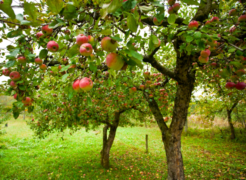

Я́блоко — сочный плод яблони, который употребляется в пищу в свежем и запеченном виде, служит сырьём в кулинарии и для приготовления напитков. Наибольшее распространение получила яблоня домашняя, реже выращивают яблоню сливолистную. Размер красных, зелёных или жёлтых шаровидных плодов 5—13 см в диаметре. Происходит из Центральной Азии, где до сих пор произрастает дикорастущий предок яблони домашней — яблоня Сиверса. На сегодняшний день существует множество сортов этого вида яблони, произрастающих в различных климатических условиях. По времени созревания отличают летние, осенние и зимние сорта, более поздние сорта отличаются хорошей стойкостью.

Среднее яблоко с умеренным содержанием пищевых волокон весит около 242 г и содержит около 126 калорий. В XIX веке в Великобритании возникла пословица: «Кто яблоко в день съедает, у доктора не бывает» (англ. An apple a day keeps the doctor away). По данным некоторых исследований, употребление яблок может снизить опасность заболевания раком кишечника, простаты и лёгких. По сравнению с другими фруктами и овощами яблоки содержат не так много витамина C, но при этом богаты другими антиоксидантами. Клетчатка яблока, хотя её меньше, чем в большинстве других фруктов, стимулирует перистальтику кишечника, что может снизить риск возникновения рака. Клетчатка также может быть полезна для профилактики заболеваний сердца, похудения и снижения уровня холестерина.
Напитки из яблок:
Способы приготовления: